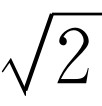

上一章我们介绍了许多新的概念和结论，它们是物理学的核心。这些概念是如此重要，以至于有必要另立一章对它们作进一步考察。在本章中，我们将不再重复用来得到那些结果的“证明”或专门技巧，而将集中讨论概念本身的问题。
在学习任何一个与数学有关的技术性课题中，人们面临着弄懂并记住大量事实和概念的任务。可以“证明”存在着某些关系将这些事实和概念联系起来。人们容易把证明本身与它们之间所建立起来的关系混淆起来。很清楚，要学习和记住的要点是事实和概念之间的关系，而不是证明本身，在任何特定的情况下，我们可以或者说“能够证明”某某是正确的，或者直接来证明它。几乎在所有情况中，我们所采用的那种特殊证明首先是为了能将它很快地和容易地写在黑板上或纸上，并且使它尽可能地清楚。结果，看上去似乎这个证明很简单，而事实上，作者可能花上好几个小时的时间，企图用不同的方法去计算这同一个问题，直到他找到一个最简洁的方法，从而能够表明可以在最短的时间内把它证明出来！当看到一个证明时，要记住的并不是证明本身，而是那些能够证明 是正确的东西。当然，如果证明中包含了一些数学推导或人们以前未见过的“技巧”，那么我们所需要注意的也不完全是技巧，而是所涉及的数学概念。
的确，一个作者在一门课程中（例如本课程）所作的全部论证，并不是他从学习大学一年级物理时就记住的。完全相反：他只记得某某是正确的，而在说明如何去证明的时候，需要的话，他就自己想出一个证明方法。无论哪个真正学过一门课程的人，都应遵循类似的步骤去做，而死记证明是无用的。这就是为什么我们在本章中将避开前面有关各种表述的证明，而只是总结一下结果。
第一个需要领会的概念是力所做的功 。物理学上“功”这个词并不是通常在“全世界无产者联合起来！”的口号中那个词所指的意思 [1] ，而是不同的两个概念。物理上的功用∫ F ·ds 来表示，称为“ F 点乘d s 的线积分”，它所指的意思是：如果在一个方向上有一个力作用于物体，使得物体在某一方向上发生位移，则只有在位移方向上的分力做了功。假若力是恒力，位移是有限的距离Δ s ，则运动中恒力在整个距离上所做的功只是沿Δ s 方向的分力乘以Δs 。规则是“力乘距离”，而真正的含义是：位移方向上的分力乘Δs ，也可以说成是作用力方向上的位移分量乘以 F 。显然，与位移成直角的力什么功也不做。
如果把位移矢量Δ s 分解成分量，换句话说，如果把Δ s 实际上看成沿x 方向的位移分量Δx ，y 方向上的位移分量Δy ，以及z 方向的位移分量Δz ，那么物体从一个地方移到另一地方所做的功可以分成三部分来计算，即计算沿x 方向、y 方向和z 方向的功。沿x 方向所做的功只涉及到x 方向的分力，即F x ，依此类推，因此所做的功是F x Δx +F y Δy +F z Δz 。当力不是恒力，而我们遇到的又是复杂的曲线运动时，必须把路程分成许多小的Δ s ，再把物体沿每个Δ s 移动所做的功统统加起来，并取Δ s 趋于零时的极限。这就是“线积分”的含意。
我们刚才所说的一切都包含在W = F ·d s 这一式子中。可以说这真是一个奇妙的式子，但要去理解它的意义或弄懂它的一些推论，则是另一回事了。
物理学上“功”这个词的含义与一般情况下的含义是不同的，为此我们必须仔细观察它显示出不同含义的某些特殊情况。例如，按照物理上的功的定义，如果一个人把100 lb的重物提在手中一段时间，他并没有做功。然而，每个人都知道他会出汗，颤抖，喘气，好像他在奔上楼梯一样。可是，奔上楼梯则被认为是在做功（按照物理学，下楼时，地球对人做功），但仅仅把物体保持在一个固定的位置上是不做功的。显然，物理学上功的定义与生理学中功的定义不一样，我们将对其原因作一简单的探讨。
当一个人提着重物的时候，他必须做“生理”上的功，这是事实。为什么他会出汗？为什么他提着重物时需要消耗营养？为什么仅仅是为了提起重物人体内部机构需要全力以赴地工作？实际上，只要将重物放在桌子上就不必再费力气；而静止和平稳的桌子不需要供给任何能量就能够把相同的重物保持在相同的高度上！生理上的情况则如下所述：在人体和其他动物内有两种肌肉，一种称为横纹肌 或骨胳肌 ，例如我们手臂中的那种肌肉，它可以随意控制；另一种称为平滑肌 ，如人肠内的肌肉，或蛤蜊之类动物中使蛤壳闭拢的闭壳肌。平滑肌工作得非常缓慢，但它能够保持一种“姿势”，也就是说，假若蛤蜊要把它的外壳闭拢在某一个位置上，即使有很大的力去改变它，它将仍然保持那个位置。在长时间的负荷下它仍然保持一定的位置而不感觉疲劳，因为这与桌子支持重物非常相似，它“固定”在一个确定的位置，而它的分子就暂时卡在那里不做功，所以蛤蜊不需花费力气。事实上，我们提着一个重物之所以要花费力气，仅仅是由于横纹肌结构的关系。当神经脉冲传到肌肉纤维的时候，该纤维就会抽搐一下，然后松弛下来，所以当我们拿起一个重物时，大量的神经脉冲流传到肌肉，大量的抽搐维持着重物，而另一些肌肉纤维则松弛着。当然，我们可以看到：当我们提起一个重物而感到疲劳时，我们就开始颤抖。其原因是神经脉冲流不规则地传过来，而肌肉疲劳了，反应得不够快。为什么会出现这种不能胜任的样子呢？我们不知道确切的原因，但是人类还没有进化到能产生快速作用的平滑肌。平滑肌支撑重物将有效得多，因为当你站着的时候，平滑肌会卡住，这不涉及到做功问题，也不需要能量，可是，它的缺点是动作非常缓慢。
现在回到物理学上来，我们或许要问：为什么 我们要计算所做的功？回答是：计算功是有意义和有用处的。因为作用于一个质点的合力对质点所做的功，恰好等于该质点的动能的变化。也就是说，假若推动一个物体，物体会获得速度，而且Δv 2 =2 F ·Δ s /m 。
力和功的另一个有趣的特性是：假设我们有一个倾斜的或弯曲的轨道，质点必须沿着轨道运动，但不存在摩擦。或者我们有一个由一根弦和一个重物组成的摆；弦约束重物围绕支点作圆周运动。如果重物摆动时，弦碰到一个木栓上，支点就改变了，结果是重物沿着两个不同半径的圆运动。这就是我们称为固定的无摩擦约束运动的例子。
在固定的无摩擦约束运动中，约束力不做功，因为约束力始终与运动方向垂直，所谓“约束力”我们指的是直接由约束本身作用到物体上的力——例如与轨道接触而引起的接触力，或者弦的张力。
一个质点在重力的影响下沿斜面运动时，所涉及的力是非常复杂的，因为有约束力和重力等等。然而，如果我们根据能量守恒定律并且只考虑重力 来计算其运动，所得出的结果是正确的。看来相当奇怪，因为严格地讲，这并不是正确的方法——我们应当用合力 来计算。但是，结果只有重力所做的功使动能改变，因为约束力所做的功是零（图14-1）。
这里的要点是：如果一个力能够分解为两个或两个以上分力之和，则合力沿某一曲线所做的功是各分力所做之功的总和。假如我们把力分解为重力与约束力等各种效应的矢量和，或者把所有的力分解成x 方向的分量和y 方向的分量，或者任何其他我们所希望的分解方式，那么净力所做的功等于被分解成的各分力所做之功的总和。
自然界中有些力，例如重力，具有非常引人注意的、我们称之为“保守”的性质（这里“保守”这个词并不涉及政治上的概念，它又是一个“怪词”）。如果我们要计算一个力使物体沿曲径从一点运动到另一点时做了多少功，一般这个功依赖于曲径，但在特殊情况下，它与曲径无关。假若它不依赖曲径，那么我们说这个力是保守力。换句话说，在图14-2中，假若沿曲线A 计算从位置1到位置2的力乘距离的积分，再沿曲线B 计算这一积分，我们得到相同的焦耳数，如果这个结果对这两点之间的每一条曲线的积分都正确，并且无论我们取哪两点这个说法都成立，那么我们就称这个力为保守力。在这种情况下，从1到2的功的积分可以用简单方法计算出来，而且可以用一个式子来表示所得的结果。一般情况下这是不易做到的，因为我们还得指定一条曲线，但当功与曲线无关时，功当然就只取决于1和2的位置了。
为了说明这个概念，现作如下考虑。
我们在任意位置上取一个“标准”点P （见图14-2），则我们所要计算的从1到2的功的线积分，可看作从1到P 点所做的功再加上从P 点到2所做的功，因为这里的力是保守力，所做的功与曲线无关。现在，从P 点到空间一个特定点所做的功是那一点的空间位置的函数。当然，它实际上也取决于P ，但在分析时，我们使任意点P 一直固定不变。如果这样做，则从P 点到2点所做的功就是最终位置2的某个函数。它取决于2所在的位置；如果到达另外的某一点，我们得到的就是不同的答案。
我们称这个位置函数为-U （x ，y ，z ），并且当我们要提到坐标为（x 2 ，y 2 ，z 2 ）的某个特定点2时就把U （x 2 ，y 2 ，z 2 ）简写成U （2）。从点1到P 所做的功也可以写成沿着相反的途 径 把全部d s 反过来的积分。也就是说，从1到P 所做之功是从P 到1所做之功的负值
这样，从P 到1所做的功是-U （1），从P 到2所做的功是-U （2）。因此，从1到2的积分等于-U （2）加上-U （1）的负值，即
我们把U （1）-U （2）称为势能的变化，并把U 称为势能。我们说，当物体处于位置2时，它具有势能U （2），在位置1时，具有势能U （1）。如果物体处于位置P ，它的势能为零。假如我们用另外一点Q 来代替P ，结果表明，势能将只会 改变一个常量（这留给读者自己去证明）。由于能量守恒只与“能量的变化”有关，所以，如果我们在势能上再加上一个常量是没有关系的。可见P 点可以任意选取。
现在我们有了如下两个命题：（1）力所做的功等于质点动能的改变；（2）在数学上，保守力所做的功等于势能函数U 的变化的负值。作为这两者的推论，我们得到一个定理：如果只受保守力的作用，则动能T 加势能U 是一个恒量
T +U =恒量．（14.2）
现在我们来讨论某些场合下的势能公式。如果有一个均匀的重力场，当我们不涉及可与地球半径相比的高度，那么力是一个沿垂直方向的恒力，所做的功就是力乘以垂直距离。于是
U （z ）=mgz ，（14.3）
而相当于势能为零的P 点刚巧是z =0的平面上的任意一点。如果有必要，我们还可以把势能写成mg （z -b ），在分析中，除了在z =0处的势能应该是-mgb 之外，其余的所有结果当然都是一样的，情况并不会有什么不同，因为我们要考虑的只是势能之差 。
把弹簧从平衡点压缩距离x 所需的能量是
在弹簧的平衡位置x =0处，势能为零。我们也可以加上一个所需要的常数。
相距为r 的两个质点M 与m ，其引力势能是
U （r ）=-GMm /r .（14.5）
这里选择的常数应使无穷远处的势能为零。当然，同样的公式可应用到电荷问题上，因为两者有相似的定律
U （r ）=q 1 q 2 /（4π ε 0 r ）.（14.6）
现在我们来具体地应用其中的一个公式看看是否明白这些公式的含义。问题：为了使火箭飞离地球，火箭发射的速度要多大？解答：动能加势能一定是恒量。当火箭“脱离”地球时，它将在离开地球千百万公里之外，如果它刚好能脱离地球，我们可以假定它到达那里时以“零速度”在勉强运动。设地球的半径为a ，质量为M 。动能加势能的总和最初是由（mv 2 /2-GmM /a ）给定。火箭运动到最后这两个能量的总和必定与此相等。动能在最后将为零，因为假设火箭那时实质上以“零速度”在勉强漂移，而势能为GmM 除以无穷大，其值为零。因此，式子的另一端中每一项都是零，这就告诉我们速度的平方必然是2GM /a ，而GM /a 2 就是所谓的重力加速度g ，于是
v 2 =2ga .
为了使人造卫星不断地绕地球转动，它必须以多大的速度运行？我们早已算出来了，是v 2 =GM /a 。因此，要离开地球，其速度必须是刚好围绕地球表面附近运行所需速度的 倍。换句话说，离开地球所需的能量必须是环绕地球运转所需能量 的两倍（因为能量按速度的平方变化）。因此，在历史上首先是使人造卫星围绕地球运行，这要求人造卫星具有5 mi·s-1 的速度。其次是发射永远离开地球的人造卫星，此时需要两倍的能量，即7 mi·s-1 的速度。
我们继续讨论势能的特征。我们考虑两个分子或两个原子的相互作用，例如两个氧原子的相互作用。当它们离得很远时，相互之间的作用力是一种引力，此引力与原子间距离的7次方成反比。而当两个原子非常接近时，则具有很大的斥力。假如对距离的7次方的倒数进行积分求所做的功，我们就得出势能U ，它是两个氧原子之间径向距离的函数，在距离较大时，势能U 按照距离的6次方的倒数而变化。
设我们画一个势能U （r ）的曲线图，如图14-3所示。我们从很大的r 开始，按1/r 6 来画，如果距离足够近，就到达势能最小点d 。r =d 处势能最小的意思是：如果从d 开始，移动很小一段距离，所做的功，即移动这段距离时的势能变化，几乎为零，因为在曲线底部势能的变化非常小。这样，在r =d 这一点不存在作用力，所以它是一个平衡点。另一个看出它是平衡点的方法是：无论从哪一个方向上离开d 都要做功。当两个氧原子稳定下来，以至于从它们之间的束缚力中不再有能量释放出来时，它们就处于最低能量状态，彼此之间隔开这个距离d 。氧分子处于“冷”态时就是这种样子。如果我们对它加热，原子就要发生振动，并且彼此之间更加分开，事实上，我们能够使它们分开，但这样做需要消耗一定数量的功或能量，这些功或能量等于r =d 与r =∞之间的势能差。当我们试图使两个原子靠得非常近时，由于它们彼此排斥，其势能增加得非常快。
我们引出势能曲线的原因，是由于力 的概念对量子力学来说不太合适，在那里，能量 的概念是最自然的。当我们进一步考虑核物质之间以及分子之间等等的更高级的作用力时，我们发现虽然力和速度都“溶化”和消失了，但是能量概念继续存在。因此，在有关量子力学的书中我们看到有势能曲线，但是很少看到两个分子之间作用力的曲线，因为在那时人们是用能量，而不是用力来分析问题。
其次我们注意到，如果有几个保守力同时作用于一个物体，那么，该物体的势能是每一个力的势能的总和。这与我们前面所提到的是同一个命题，因为，假若力能表达为分力的矢量和，则总的力所做的功是分力所做的功的总和，因此能把它分析为各个力的势能的改变。于是，总的势能是所有各部分的势能的总和。
我们可将此推广到包含很多物体相互作用的系统中去，例如木星、土星、天王星等，或者是氧、氮、碳等系统，系统中的物体彼此成对地作用着，并且作用力都是保守力。在这种场合下，整个系统中的动能就是所有个别原子或行星或其他什么东西的动能的总和，而系统的势能则是每对物体相互作用势能的总和，在计算一对质点的相互作用势能时，其他质点都好像不存在一样（这种说法对分子实际上是不正确的，因而公式要复杂一些；对牛顿万有引力，这当然是正确的，而对分子力则近似地正确。对分子力来说也存在势能，但它往往是原子位置的比较复杂的函数，而不只是各对分子的势能的总和）。因此，在万有引力的特殊情况下，势能是-Gm i m j /r ij 对所有的i ，j 求和，如式（13.14）所表示的那样。式（13.14）用数学方法表达了如下定理：总的动能加上总的势能不随时间而变化。当各种行星周而复始继续不断地运行和旋转时，如果计算它的总动能和总势能，我们发现，其总和保持不变。
我们花了相当多的时间讨论保守力；关于非保守力又是怎样呢？我们对这个问题将采取比通常深入的看法，并将说明不存在非保守力！实际上，自然界所有的基本力都是保守力。这不是牛顿定律所得出的结果。事实上，按照牛顿自己的看法，力可以是非保守的，如摩擦力显然就是非保守力。但当我们说到摩擦力显然是非保守力时，我们采用的是现代的观点，即认为粒子之间的最基本的力都是保守力。
例如，如果我们分析一个很大的球状星团，我们从一张这种星团的照片上可以看到有几千个星球彼此相互作用，那么，总势能的式子只不过是一项加另一项等等，对所有各对星球求和，而动能是所有各个星球动能之和。但星团作为一个整体也在空间漂移，假若我们离开它足够远，不能详细观察它，可以把它想象为一个单一的物体。假若对它施加作用力，其中有一部分力最终驱使它作为整体向前运动，我们就看到物体的中心在运动。另一方面，有些力可以说是“消耗”在增加内部“粒子”的动能或势能上。例如，我们假定这些力的作用使整个星团扩张，并且使其中的质点运动得更快。整个体系的总能量实际上是守恒的，但用我们不精确的眼睛从外面看（它不能看出里面运动的混乱情况），并且把整个物体运动的动能看作单一物体的动能，能量就似乎是不守恒了。但这是由于我们对看到的东西缺乏了解。结果实际的情形却是：当我们足够仔细地观察时，世界上的总能量（动能加势能）是一个恒量。
当我们非常仔细地研究原子范围的物质时，物体的总能量并不一定能够方便地分成动能与势能两部分的，而且这种区分也不一定必要。但要这样做几乎 总是可能的，所以我们说这种区分总是可能的，并且世界上动能加势能是一个恒量。这样，在整个世界内总的动能加势能是一个恒量，如果“世界”是一块孤立物质，若无外力作用，其能量也是一个恒量。但正如我们已经看到的那样，同样东西的动能和势能中有些可以在其内部，例如内部的分子运动，这是从我们还没有注意到它这个意义上说的。我们知道，在一杯水中一切都在晃动着，所有各部分一直在运动着，所以一杯水内部有一定的动能，通常我们可能不会去注意它。我们不注意原子的运动，这种运动产生热，所以我们不称它为动能，而热原来也是动能。内部的势能同样可以具有一定的形式，例如化学能的形式：当我们燃烧汽油时，由于新的原子排列比旧的原子排列所具有的势能低，所以有能量释放出来。把热纯粹当作动能并非严格，因为其中包含一些势能，反之化学能也不能单纯说成是势能，也包含少量的动能。把上面所说的话并在一起就是说：一个物体内部的总的动能和势能一部分是热，一部分是化学能，等等。总之，所有这些不同形式的内能在上述意义中常常看作是“损失掉”的能量；当我们研究热力学的时候将会对此更加清楚。
作为另一个例子，当有摩擦存在时动能并非真正损失掉，即使一个滑动着的物体停了下来，看上去动能似乎损失掉了，其实，动能并没有损失掉，因为内部原子以比以前更大的动能晃动着，虽然我们不能看到这些，但可用测定温度的办法来量度它。当然，如果我们不考虑热能，那么，能量守恒定律就显得不正确了。
另一种情况是，当我们只研究系统的某一部分时，能量守恒也似乎不正确。当然，如果某个物体与外面的某个物体相互作用，而我们忽略了把这种作用计算进去，此时能量守恒定理就会显得不正确了。
在经典物理学中，势能只包括引力能和电能，现在我们则还有核能和其他能量。例如，光能在经典理论中必须作为一种新的能量形式，但是如果我们愿意的话，也可以把光能想象为光子的动能，这样，式（14.2）仍旧是正确的。
现在我们将要讨论几个与势能以及场 的概念有联系的问题。假定我们有两个大物体A 和B ，以及第三个很小的物体。第三个小物体受到两个大物体的万有引力吸引，吸引的合力为 F 。在第12章中我们已经注意到，作用在一个质点的万有引力可以写成它的质量m 乘以另一个矢量 C ， C 只取决于质点的位置
F =m C .
于是，我们可以这样来分析重力：想象在空间每一位置都存在一个矢量 C ，它“作用”于可能放在该处的一个质量上，但不论实际上是否有质量被它作用，矢量 C 本身总是存在的。 C 有三个分量，每一个分量都是（x ，y ，z ）的函数，即空间位置的函数。这样的东西我们称为场 ，我们说物体A 和B 产生 了场，即它们“创造”了矢量 C 。当一个物体被置于场内，作用于物体的力等于该物体的质量乘以物体所在处的场矢量的数值。
我们对势能也可以同样处理：由于势能是（F ）·（d s ）的积分，可以把它写成m 乘以（场）·（d s ）的积分，这只是改变一下标度，所以我们看到一个物体在空间一点（x ，y ，z ）所具有的势能U （x ，y ，z ），可以写成m 乘以另一个我们称为 Ψ 的势 函数积分∫ C ·d s =- Ψ ，就像∫ F ·d s =-U 一样，两者之间只相差一个标度因子
U =-∫ F ·d s =-m ∫ C ·d s =m Ψ .（14.7）
在空间每一点上有了这个函数 Ψ （x ，y ，z ）后，我们就可以直接计算物体在空间任何一点的势能，即U （x ，y ，z ）=m Ψ （x ，y ，z ）。这看起来似乎价值不大，实际上并非没有价值，因为有时用空间各处的 Ψ 值而不是用 C 值能更好地描述场 。我们可以用标量函数 Ψ 来代替一定要写出三个复杂的分量的矢量函数。而且，如果场是由许多质量产生的，计算 Ψ 比计算 C 的任何一个分量要容易得多，因为势是一个标量，只要相加就行了，不必为方向而操心。同样，我们会看到，从 Ψ 很容易重新得出场 C 。假设质点m 1 ，m 2 ，…位于点1，2，…处，我们希望知道任何一点p 的势函数 Ψ 。很简单，它就是各个质点在p 点所产生的势之和
在上一章中，我们应用过总的势能是所有个别物体势能的总和这个公式，来计算一个球壳形状的物体的势能，这个势能只要把球壳的所有部分对某一点势能的贡献相加就可获得。计算的结果画在图14-4中。总势能是负的，在r =∞处其值为零，从r =∞直到半径a 处其值按1/r 变化，然后在球壳内则是常数，在球壳之外，势能是-Gm /r （此处m 是球壳的质量），它与球壳的质量全部集中在球心时的势能完全一样。但它不是在任何地方 都严格相同，在球壳之内，势能就是-Gm/a ，并且是一个恒量。如果势能为恒量 ，就不存在场，或者不存在作用力，因为，如果我们在球壳内把物体从一个地方移动到另一个地方，力所做的功必然为零。为什么？因为物体从一个地方移动到另一个地方所做的功等于势能改变的负值（或者相应的场积分是势的改变）。但在球壳内任何两点的势能是相同的 ，所以势能的改变为零，因此，在球壳内任何两点之间移动时不做功。只有在完全没有作用力存在时，才能使所有位移方向上做的功为零。
这给我们提供一个如何从已知势能去求出力或场的线索。假定物体在（x ，y ，z ）位置的势能是已知的，我们要求出作用于该物体上的力。正像我们将要看到的那样，仅仅根据这一点的势能，是不能求出力的，还需要知道邻近点的势能。为什么？如何计算力在x 方向的分量（当然，如果能够计算x 方向的分量，也就能够计算y ，z 方向上的分量，也就知道了整个作用力）？现在，如果我们使物体移动一个小小的距离Δx ，作用于物体的力所做之功是力在x 方向的分量乘以Δx ，如果Δx 足够小，这就应等于从一点移动到另一点的势能之变化
ΔW =-ΔU =F x Δx .（14.9）
我们只不过应用了公式∫ F ·d s =-ΔU ，但是只适用于一个非常短的路径。把它除以Δx ，于是得到的力是
F x =-ΔU /Δx .（14.10）
显然这是不严格的，实际上我们所需要的是Δx 变得越来越小时式（14.10）的极限，因为它只有在Δx 趋于无穷小的极限时才是严格 正确的。我们认识到这正是U 对x 的微商，因此倾向于写成-dU /dx 。但U 依赖于x ，y 和z ，而数学家创造了一个不同的符号来提醒我们对这一函数求微商时要非常小心，使我们记住所考虑的只是x 的变化，y 和z 是不变的。他们用“反写的6”即∂ 来代替d（我认为在微分学刚开始就应当使用∂ ，因为我们总是想消去式子中的这个d，而从来不想去消去∂ ），所以他们写成∂U/∂x ，而且，在不得已的时候，如果他们想要非常 仔细，就放一根在底部写有小的字母yz 的直线在∂U/∂x 旁边（∂U/∂x | yz ），它表示：“保持y 和z 不变，取U 对x 的微商”。在大多数场合下，我们不写出关于保持常数的记号，因为通常从上下文中是看得很明显的，所以我们一般不用这根写有y 和z 的直线。然而，总是用∂ 代替d，以告诉人们它是使另一些可变量保持常数的微商。这称为偏导数 ，它是当只有x 改变时的微商。
于是，我们得到x 方向的分力是U 对x 偏导数的负值
同样，保持x 和z 不变，以U 对y 求微商可得到力在y 方向上的分量，当然，第三个力的分量是保持y 和x 不变时，U 对z 的微商
这是从势能求得力的方法。我们以完全相同的方向从势能求得场强
我们在这里附带提一下另一个符号，这个符号实际上在相当一段时间里还用不到；由于 C 是矢量，有x ，y 和z 的分量，而产生x ，y 和z 分量的符号∂/∂x ，∂/∂y 和∂/∂z 有点像矢量。数学家已经创造了一个了不起的符号▽ ，称为“梯度”或“grad”，▽ 不是一个量，而是一个从标量得出矢量的算符。它具有下列“分量”：“grad”的x 方向的分量是∂/∂x ，y 方向的分量是∂/∂y ，z 方向的分量是∂/∂z ，于是很有趣，我们的公式可以写成
F =-▽ U ， C =-▽ Ψ .（14.14）
运用▽ ，给我们提供了一个快速方法以检验是否有一个真正的矢量式，实际上式（14.14）的含义确实与式（14.11）和（14.12）一样；它只是这些式子的另一种写法，由于我们不愿意每次都写出三个方程式，所以就以▽ U 来代替。
电的情形是场和势的又一个例子。在电的场合中，作用在静止物体上的力是电荷乘以电场： F =q E ［当然，一般在电学问题中x 方向的分力也有一部分取决于磁场。由磁场引起的作用在质点上的力总是与质点的速度垂直，并与磁场方向垂直，从式（12.10）很容易证明这一点。既然磁场引起的作用在运动电荷上的力是垂直于速度的，磁场对运动电荷就不做功，因为运动方向与力的方向垂直。因此，在电场和磁场中使用动能定理时，我们可以不管磁场的作用，因为它不改变动能］。假定只存在电场，那么用与万有引力同样的方法，我们可以计算能量，或电场力所做的功，并可计算φ 的数值，它是 E ·d s 从任意确定的一点到我们欲计算的那一点的积分的负值，于是电场的势能就是电荷乘以φ
我们取两块平行金属板作为例子，每一块金属板表面单位面积的电荷为±σ 。这个装置称为平板电容器。我们先前已求得金属板之外的力为零，并且两块平板之间有一个恒定电场，其方向从+指向-，大小为σ /ε 0 （图14-5）。我们想知道将一个电荷从一块平板移到另一块平板上要做多少功。这个功是（力）·（d s ）的积分，它可以写成电荷乘以平板1的势与平板2的势之差
实际上我们可以算出这一积分，因为力是恒定的，如果令两块平板之间的距离为d ，则积分是容易的
势差Δφ =σd/ε 0 称为电压差 ，φ 以伏特来量度。当我们说一对平板充电到一定的电压，意思是指两块平板之间的电势差为多少伏特。对于两块面电荷为±σ 的平板所组成的电容器，两块平板的电压或电势差是σd/ε 0 。
[1] 英文中“功（work）”与“无产者（worker）”出于同一词源。——译者注